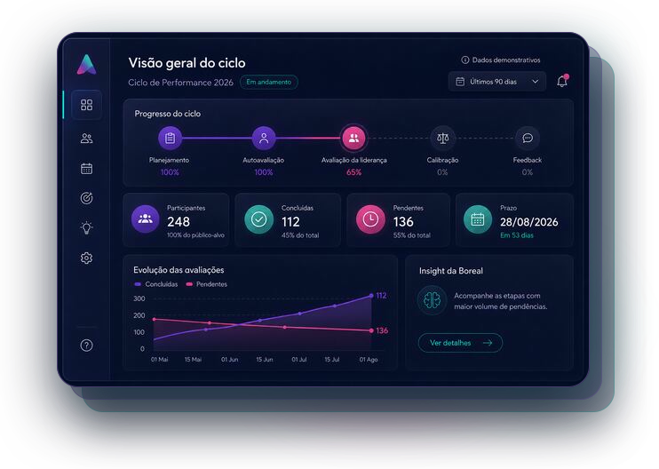

People Analytics para decisões melhores
Decisões sobre pessoas guiadas por dados.Insights que geram resultados.
A Aurora cruza dados de performance, cultura e engajamento para gerar insights que ajudam líderes a decidir melhor, com foco em resultado e impacto.

Dados claros. Decisões mais conscientes.